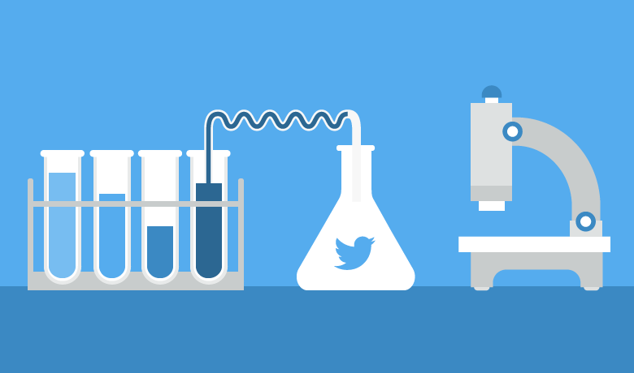
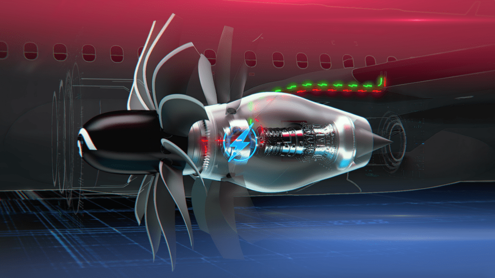
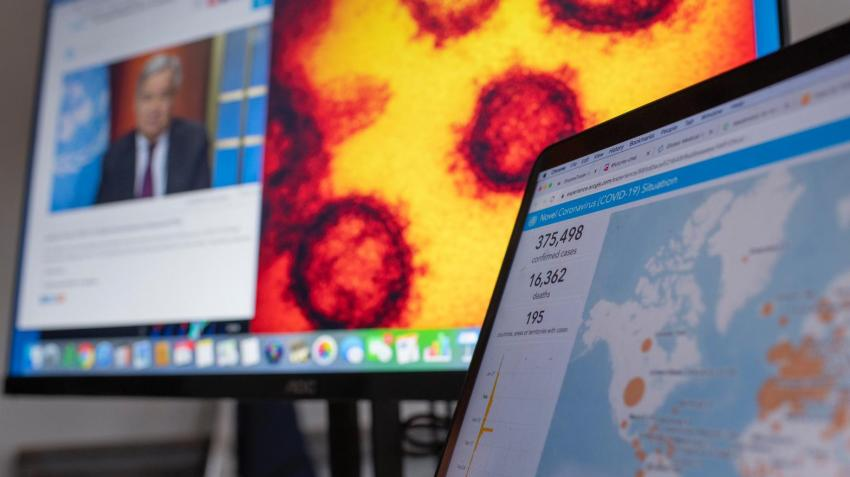

Skeleton based Action Recognition System
 As a dessertation topic, I conducted an analysis and comparison of two Graph Convolutional Network algorithms, Shift Graph Convolutional Network and Channel-wise Topology Graph Convolutional Network, for skeleton-based action recognition. I used three large-scale datasets, NTU-RGB+D 60,120 and Kinetics, and performed extensive tests to propose a new algorithm that achieved the state of the art. Through this project, I developed skills in computer vision, neural networks, temporal and spatial modeling, and Graph Convolutional Networks.
As a dessertation topic, I conducted an analysis and comparison of two Graph Convolutional Network algorithms, Shift Graph Convolutional Network and Channel-wise Topology Graph Convolutional Network, for skeleton-based action recognition. I used three large-scale datasets, NTU-RGB+D 60,120 and Kinetics, and performed extensive tests to propose a new algorithm that achieved the state of the art. Through this project, I developed skills in computer vision, neural networks, temporal and spatial modeling, and Graph Convolutional Networks.
View Report
Twitter Data Analysis
Scraped Twitter data from European region of the month June,2021 and conducted statistical analysis to identify top/bottom tweet days and locations, active/inactive users, peak activity times, and detect bots. Utilized exploratory data analysis and visualization to find insights, verified results online.
View Report
Comedy Show Recommendation System
 Examined the comedy performances of various comedians and created a system for suggesting similar shows. This involved scraping the performances of the top ten comedians from the web, cleaning and analyzing the data using natural language processing and network analysis techniques, and employing machine learning methods to build a recommendation system.
Examined the comedy performances of various comedians and created a system for suggesting similar shows. This involved scraping the performances of the top ten comedians from the web, cleaning and analyzing the data using natural language processing and network analysis techniques, and employing machine learning methods to build a recommendation system.
View Report
Nasa Aircraft's Engine Analysis
This study outlines a machine learning project focused on predicting the remaining useful life (RUL) of aircraft components using the NASA C-MAPSS dataset. Regression and classification models such as KNN, Naïve Bayes, Random Forest, and SVM were deployed and tested to assess the engine's lifetime, with a particular focus on capturing low RUL values to prevent putting the engine at risk. The report provides theoretical details and serves as a valuable resource for understanding the framework used to predict RUL and optimize maintenance behavior.
View Report
Indian Prime Menister's speech analysis during covid pendamic
Utilized artificial intelligence to analyze the Prime Minister of India's speeches during the Covid-19 pandemic. The goal is to evaluate the relationships between the articulations delivered by the Prime Minister, using various AI tools such as word-clouds, similarity, network analysis, sentiment analysis, and centrality. The analysis findings are then compared to actual data to verify accuracy. The report discusses the tools used in the analysis, which include three major components: data cleaning and structuring, natural language processing, and network analysis, each with sub-headings to facilitate data exploration. The report provides a comprehensive overview of the project's methodology and serves as a valuable resource for understanding the use of AI in analyzing speeches.
View Report